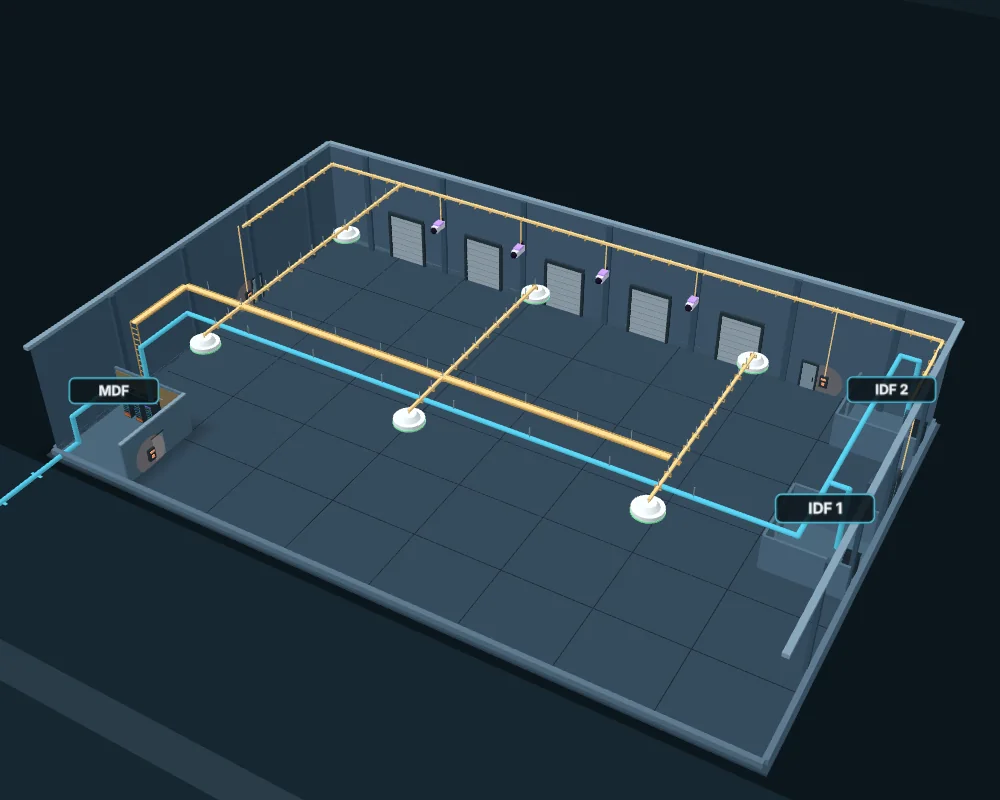
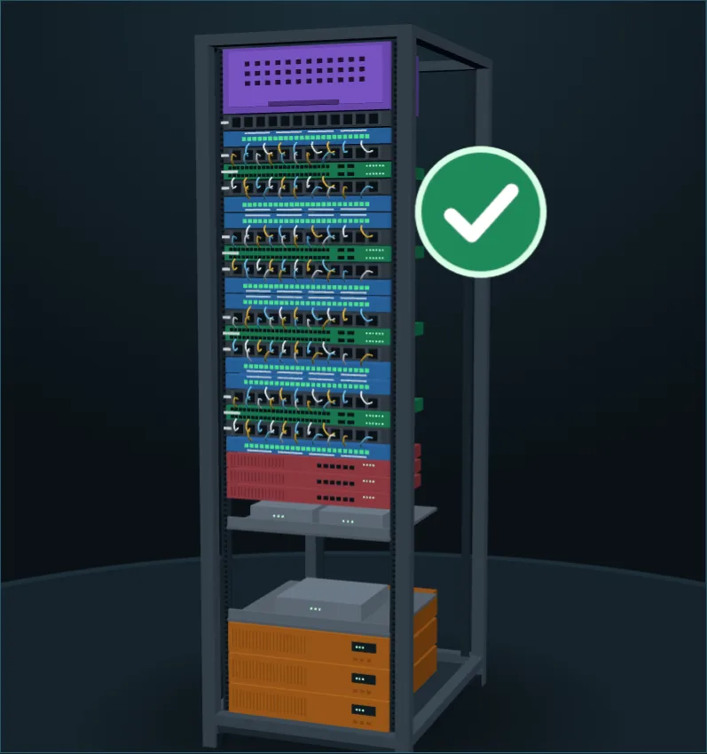

How We Build
Every system in your building, installed right the first time.
One large building, one system at a time.

- Fiber and backbone
- Tray and J-hooks
- Wi-Fi
- Cameras
- Card readers
The whole building
One open building with dock doors and network rooms, ready for every system.
Fiber entrance to the MDF
Fiber arrives underground from the street and lands in the MDF, the heart of the network: racks, patch panels and switches in one labeled, controlled room.
Backbone to the IDFs
Backbone cabling links the MDF to each IDF closet, so every corner of the building reaches the network.
Tray and J-hooks
Cable tray and J-hooks carry the cabling across the ceiling, neat and out of the way, with a drop to every device.
High-bay Wi-Fi
High-bay access points hang from the ceiling in an even grid, so coverage follows the people and scanners on the floor.
Coverage shown is illustrative, not a survey result.
Cameras
Cameras watch the dock doors, so the busiest part of the building is in view.
Camera views shown are illustrative.
Access control
Card readers on the man-doors and the MDF door put the right people in the right rooms.
Everything together
Fiber, cabling, Wi-Fi, cameras and access control, installed as one coordinated system.
What do you need?
From the street to the MDF and up the riser, spliced, tested and documented.
Get a quoteRacks, backbone and horizontal runs built to standard and labeled so the next tech can follow them.
Get a quoteCoverage planned from a site survey, not guesswork, then validated after install.
Get a quoteCameras placed for the views that matter: entries, corridors and parking.
Get a quoteReaders, door hardware and panels wired back to the IDF and ready for your system.
Get a quoteA rack your next tech can trace in seconds.
Clean, labeled, tested and documented from day one.

- Fiber enclosure
- Horizontal manager
- Patch panel
- PoE switch
- Firewall and edge
- Shelf
- UPS
Empty rack
A clean four-post rack, open front and back, so every cable has room from day one.
Fiber enclosure
Fiber lands first, in its own enclosure at the top, so the incoming service is easy to find.
Panels and managers
Patch panels sit between horizontal managers, so every copper run has a tidy path to its switch.
Switches
Every switch gets a manager above and below it, which keeps cords short and out of the way.
Firewall and edge
Firewalls, the edge router and carrier gear sit below the switches, apart from the cabling.
UPS
UPS units go at the bottom, where the weight sits lowest, to back up the gear above.
Dressed and labeled
Short patch cords run through the managers and every port is labeled, so the next tech can trace it.
Tested
Every run is tested before handover, so the rack works the day it goes live.
What do you need?
From the street to the MDF and up the riser, spliced, tested and documented.
Get a quoteRacks, backbone and horizontal runs built to standard and labeled so the next tech can follow them.
Get a quote